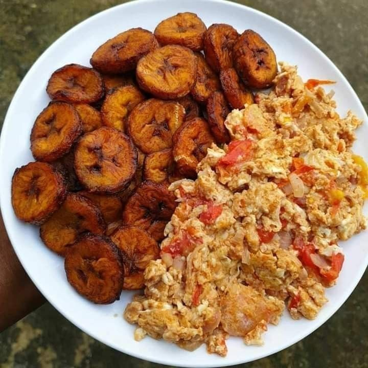

Egg and Plantain

Description
A delicious and nutritious meal made from egg and plantain.Egg and plantain is a popular Nigerian breakfast or snack dish that's easy to make and packed with flavor. It's a great option for those who are looking for a quick and satisfying meal.
Ingredients
- 2 ripe plantains, peeled and sliced
- 2 eggs, beaten
- 2 large onions, chopped
- Salt and pepper to taste
Steps
- Peel the plantains and slice them into your desired thickness.
- Heat oil in a frying pan over medium heat.
- Add the plantain slices to the hot oil and fry until golden brown on both sides
- In the same pan, add the beaten eggs and cook until set. Season with salt and pepper to taste.
- Place the fried plantains on a plate and top with the cooked eggs
- Serve immediately.
Go back